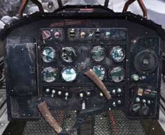

| 概要 | 地図 |
| 淡いヒント集 | ヒント集 | 的確なヒント集 |
| 攻略最短ルート |
| 場所選択に戻る |
雪山
|
崖を飛び越えて
崖を飛び越えたあなたは、飛行機のようなものを落下するのを見るだろう。ハンスやオスカーのことも気になるが、落ちた飛行機（のようなもの）の運転手のことも気になってしまう。 あなたがやらなければならないことは、 ・崖を飛び越える ・崖を上る ・飛行機の運転手の状態を調べる ・飛行機の運転手を起こす ということである。 ・熊を追い返したら、この崖を飛び越えよう。 ・折れた木と、橋のロープを使って忍者のように飛び越えればよい。 ・では、その準備のために必要な道具は持っているだろうか。 
・飛行機が落ちるのを見たあなたは、崖を上らなくてはならない。 ・上の画像のようにあるアイテムを使いながら、崖を上る。 ・崖の足場は直線的ではない。左右上下に複雑に入り組んでいる。 ・崖の模様にだまされては行けない。 
・飛行機の運転手は木に引っかかっていた。 ・どうすれば彼を起こすことができるか。 ・ヘッドフォンを付けているので、外からの声は聞こえない。

・外からの音が聞こえないからとあきらめないで欲しい。 ・飛行機に乗るときに付けていたヘッドフォンならば、飛行機の無線が聞こえるはずだ。 ・コクピットを見て、どうすれば話しかけられるか考えてみよう。 ・少なくとも、マイクはない。 ・ボタンが多いが、惑わされてはいけない。色の付いていないボタンには意味がないのだ。 
・飛行機の落下現場から少し離れたところに、無線設備がある。 ・これを使って、運転手を起こすことができるだろう。 ・機械の使い方は分かるだろうか? 周波数は分かるだろうか? ・ここの設備は、マイク、無線機(周波数の操作)、レーダー、アンテナがある。全てをちゃんとセットしないと使い物にならない。 |
| 場所選択に戻る |
| 概要 | 地図 |
| 淡いヒント集 | ヒント集 | 的確なヒント集 |
| 攻略最短ルート |
Syberia II
| 目次へ戻る | ページの上部へ |